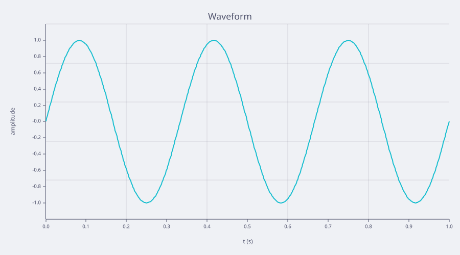

Waveform
The amplitude and waveform come from the controls beside the plot.
rustlab
amp = widget("amp");
freq = widget("freq");
t = linspace(0, 1, 500);
if widget("shape") == "cosine"
y = amp * cos(2 * pi * freq * t);
else
y = amp * sin(2 * pi * freq * t);
end
clf
plot(t, y)
title("Waveform")
xlabel("t (s)")
ylabel("amplitude")